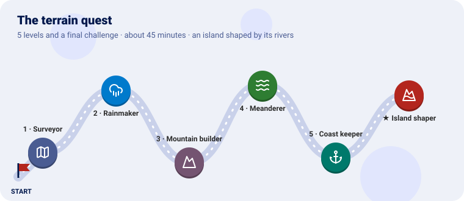
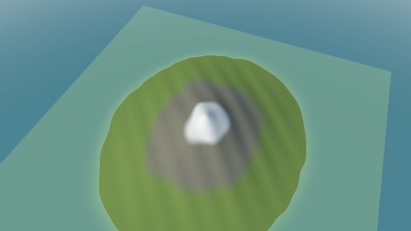
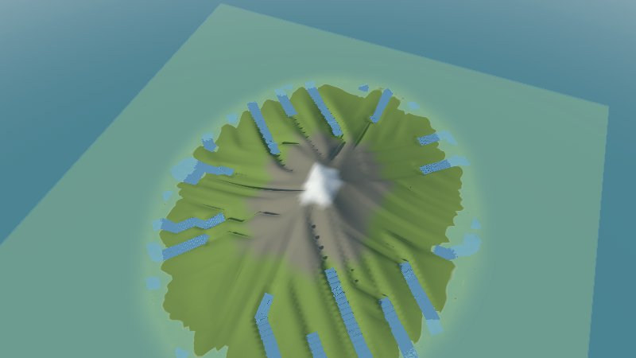
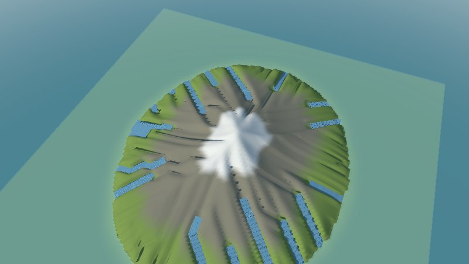
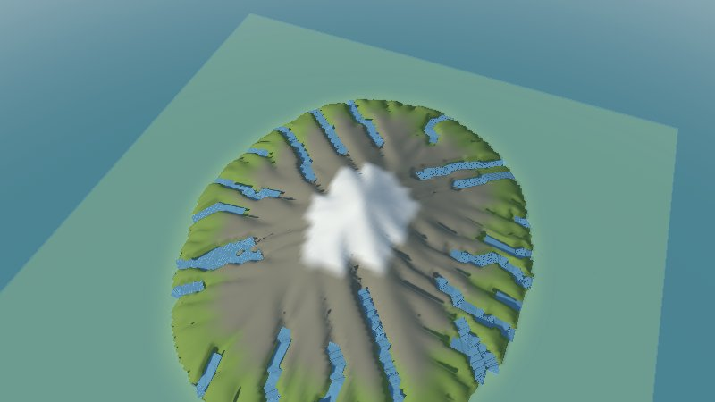
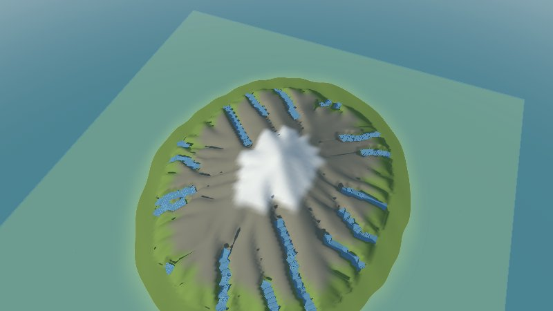
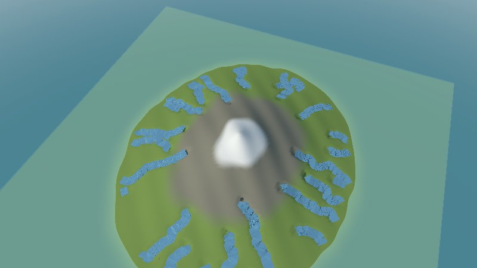
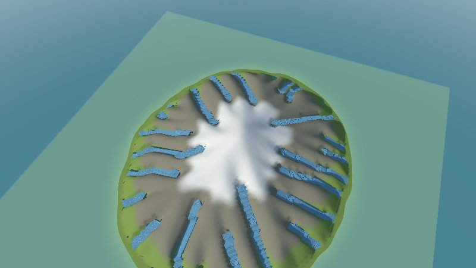
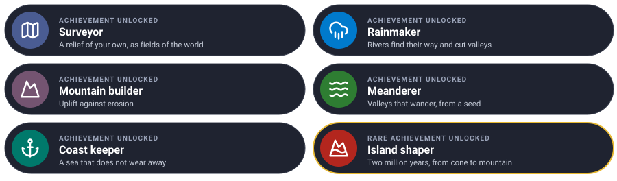

Shape an island with water and time, one level at a time. Each level teaches one piece of the terrain plugin and ends with a new island to look at in 3D.

We start from a smooth volcano of your own, 800 metres high, and let rivers find their way down it, uplift push it up, valleys wander, and the sea hold its coast, until two million years have made a mountain island.
Every level has the same shape: the idea (explained with something from everyday life), the rules, a checkpoint to know it works, and an optional bonus.
You need Go 1.25 and GEOS (sudo apt install libgeos-dev, brew install geos), for looking at the
results with Go Scene Builder. Clone the projects side by side, and make a folder for the quest:
git clone https://github.com/akrck02/go-renderer
git clone https://github.com/akrck02/go-scene-builder
git clone https://github.com/akrck02/go-simulator
git clone https://github.com/akrck02/go-simulator-terrain
mkdir island && cd island
go mod init example.com/island
The plugin publishes fields: a grid of numbers over the world, such as the height of every cell. A run without a window writes each field in Go Scene Builder’s relief format, so the builder can turn it into a 3D scene for Go Renderer’s viewer. Three files do it, made once:
view.yaml, how the island looks (green low down, rock higher, snow at the top, a sea at 0 m, the
rivers as water):
units: m
chunk: 2
environment: {sun: [220, 35], water_level: 0}
terrain: {color: "#7f9a4e", bands: [{above: 250, color: "#8a8674", blend: 80}, {above: 600, color: "#e9e7e1", blend: 60}]}
rules:
- when: {kind: river}
shape: {role: water, width: "width * 1000"}
look/main.go, which tells the builder how a snapshot’s map is written (kilometres, with z growing
to the south):
// Command look turns a snapshot's entities into a map go-scene-builder reads: the snapshot writes
// [x, z] in kilometres, with z to the south, and the builder needs to be told so.
//
// go run ./look "results/island 100.geojson" map.geojson
package main
import (
"encoding/json"
"log"
"os"
)
func main() {
content, err := os.ReadFile(os.Args[1])
if err != nil {
log.Fatal(err)
}
var collection map[string]any
if err := json.Unmarshal(content, &collection); err != nil {
log.Fatal(err)
}
properties, _ := collection["properties"].(map[string]any)
if properties == nil {
properties = map[string]any{}
}
properties["units"], properties["axes"] = "km", "east-south"
collection["properties"] = properties
out, _ := json.Marshal(collection)
if err := os.WriteFile(os.Args[2], out, 0o644); err != nil {
log.Fatal(err)
}
}
And the three commands, after every run (here for the snapshot at time 100 of the stage island):
go run ./look "results/island 100.geojson" map.geojson
go run ../go-scene-builder/cmd/build-scene -map map.geojson -relief "results/island 100 elevation.json" -style view.yaml -out island.glb
go run ../go-renderer/cmd/visor island.glb
The pictures were taken with -zoom 0.75 in the viewer.
| Mission | Pieces | Time |
|---|---|---|
| A volcano of your own, in the world | the relief format, the relief rule, fields, snapshots |
10 min |
A relief is a chessboard of heights: every square says how high the ground is. It lives
in two files, a small label (relieve.json: how many squares, how big, where) and the heights
themselves (relieve.f32: one number per square, row by row from the north).
The relief rule reads it and puts it in the world as two fields: elevation (metres) and
slope (how steep, rise over run). Other plugins read those fields; the terrain plugin’s other
rule will change them.
island/main.go writes the volcano, 8 × 8 km in cells of 50 m:
// Command island writes a made-up island: relieve.json, the grid's size and place in kilometres,
// and relieve.f32, a height in metres for every cell, row by row from the north.
package main
import (
"encoding/binary"
"encoding/json"
"log"
"math"
"os"
)
func main() {
const (
columns, rows = 160, 160 // cells
cell = 0.05 // kilometres a side: 50 m
west, north = -4.0, 4.0
)
heights := make([]float32, 0, columns*rows)
for row := range rows {
for column := range columns {
east := west + (float64(column)+0.5)*cell
northing := north - (float64(row)+0.5)*cell
heights = append(heights, float32(height(east, northing)))
}
}
header, _ := json.Marshal(map[string]any{"columns": columns, "rows": rows, "cell": cell, "west": west, "north": north, "units": "km"})
if err := os.WriteFile("relieve.json", header, 0o644); err != nil {
log.Fatal(err)
}
file, err := os.Create("relieve.f32")
if err != nil {
log.Fatal(err)
}
defer file.Close()
if err := binary.Write(file, binary.LittleEndian, heights); err != nil {
log.Fatal(err)
}
}
// height is a volcano-shaped island 800 m high, a little lopsided, under the sea at its edges.
func height(east, north float64) float64 {
distance := math.Hypot(east*1.2, north) // wider east to west
shoulder := math.Max(0, 1-distance/3.2)
// ridges and hollows of a few sizes, so the rivers have somewhere to start
bumps := 60*math.Sin(east*2.3+1)*math.Cos(north*1.7) + 30*math.Sin(east*5.1)*math.Sin(north*4.3+2) + 15*math.Cos(east*9.7+north*8.9)
return 820*math.Pow(shoulder, 1.6) + bumps*shoulder - 30
}
go run ./island
rules.yaml, one stage of one step that snapshots the world at its end:
plugins:
- name: terrain
command: [go, run, .]
directory: ../go-simulator-terrain
stages:
- name: ground
clock: {from: 0, to: 1, step: 1}
snapshots: [1]
rules:
- rule: relief
with: {path: relieve.json, origin: [0, 0]}
go run ../go-simulator/cmd/simulate -rules rules.yaml -output results/
results/ holds ground 1 elevation.json and .f32, ground 1 slope.json and .f32. Look at
the elevation (the snapshot is ground 1): a smooth cone in the sea, green at the shore, rock on
its shoulders, snow on top.

Learn more: Reliefs and fields · Rules
| Mission | Pieces | Time |
|---|---|---|
| Rivers that find their way down and cut valleys | the erosion rule, years per step, drainage |
8 min |
Pour a glass of water on a sandcastle: it runs down the steepest way, gathers in gullies, and the more water a gully carries, the faster it digs. That is the stream power law: erosion grows with the area a river drains and the slope it runs down. Over thousands of years, gullies become valleys.
Each step of the clock stands for as many years as years_per_unit says: 100 steps of 10,000
years are a million.
A stage of 100 steps, with the relief first and erosion after it:
plugins:
- name: terrain
command: [go, run, .]
directory: ../go-simulator-terrain
stages:
- name: island
clock: {unit: year, from: 0, to: 100, step: 1}
snapshots: [0, 100]
snapshot_fields: [elevation, drainage_area]
rules:
- rule: relief
with: {path: relieve.json, origin: [0, 0]}
- rule: erosion
with: {years_per_unit: 10000, erodibility: 0.000002, river_area: 0.3}
river_area says from how many km² drained a stream counts as a river: those become entities of
kind river, which look puts on the map.
The run takes a second or two. At 100, the volcano is lower and scored by gullies, with rivers down to the sea.

Learn more: How it works · Erosion
| Mission | Pieces | Time |
|---|---|---|
| Uplift that pushes the island up as the rivers wear it down | uplift |
5 min |
An escalator going up while you walk down: if you walk as fast as it climbs, you stay where you are. Mountains are like that: the earth pushes them up, rivers wear them down, and they settle where the two balance.
The erosion rule’s parameters only:
with: {years_per_unit: 10000, uplift: 0.0002, erodibility: 0.000002, river_area: 0.3}
0.0002 m a year is 2 metres every 10,000 years.
The island grows taller, the snow reaches lower, and the valleys run straight from the top, like the spokes of a wheel: water always takes the steepest of the eight neighbours of a cell, so it follows the grid.

| Mission | Pieces | Time |
|---|---|---|
| Valleys that wander, the same every run | random_receivers, seed |
5 min |
Real water does not always take the single steepest way: a pinball bounces down a slope, more
often down the steeper side, never quite the same line. With random_receivers, water picks a
lower neighbour by chance, weighted by its slope. The seed makes the chance repeatable: the
same seed, the same valleys.
with: {years_per_unit: 10000, uplift: 0.0002, erodibility: 0.000002, river_area: 0.3, random_receivers: true, seed: 7}
The spokes are gone: valleys bend and join as on a real mountain. Run it twice: the two islands are identical. Change the seed: other valleys.

| Mission | Pieces | Time |
|---|---|---|
| A sea level the rivers stop at | sea_level |
4 min |
A river stops cutting where it meets the sea: the sea is its floor. Ground under sea_level is
sea, and does not change, so the coast holds while the land above it is carved.
with: {years_per_unit: 10000, uplift: 0.0002, erodibility: 0.000002, river_area: 0.3, random_receivers: true, seed: 7, sea_level: 60}
Below 60 m, a ring of the old smooth slope stays as it was, a green shore round the island; above it, the valleys reach down to it.

Learn more: Rules: erosion
Run two million years on the volcano, with uplift, wandering valleys, rounder hills and a sea at 20 m, and snapshot the start, the middle and the end. Then look at the start and the end side by side.
Hint: 200 steps of 10,000 years; three snapshots; all the parameters of levels 2 to 5, a lower
river_areafor more rivers.
Try it on your own first, then compare with the solution.


clock: {unit: year, from: 0, to: 200, step: 1}
snapshots: [0, 100, 200]
snapshot_fields: [elevation, drainage_area]
rules:
- rule: relief
with: {path: relieve.json, origin: [0, 0]}
- rule: erosion
with: {years_per_unit: 10000, uplift: 0.0002, erodibility: 0.000002, diffusivity: 0.01, river_area: 0.2, random_receivers: true, seed: 7, sea_level: 20}
You made a relief, put it in a world, and wore it into a mountain with the same laws real geomorphologists use.
| Idea | Difficulty | Hint |
|---|---|---|
| Wider rivers | ⭐ | river_width: [6, 0.5] |
| The made-up island that comes with the plugin | ⭐ | examples/eroding-island.yaml, a .npy relief |
| Give it a climate | ⭐⭐ | The climate plugin reads elevation from the world: put its rule after these |
| Forests on it | ⭐⭐⭐ | The flora plugin, after the climate |
| You see | Why, and what to do |
|---|---|
relief: unknown units |
units in relieve.json must be km or m |
| The island is mirrored north to south, the rivers off the valleys | The map was not run through look: the snapshot writes z to the south |
| No rivers at all | river_area is larger than any river’s drainage: lower it, or run longer |
| The island sinks into the sea | Erosion with no uplift only lowers it: add uplift, or fewer steps |
pkg-config: geos not found |
GEOS is needed by Go Scene Builder, to look at the result |